CONGRATS TO CLAN ELYSIUM FOR WORLD FIRST!!
-
Crystals for Bitterpearl shader (Pearl of Glass triumph): [video guide]
-
Secret chest locations (Temporal Caches triumph): [video guide]
-
Vex Mythoclast catalyst guide: [link]
Your team will spawn into the Waking Ruins. Three Vex Sync Plates are located on the left, middle (in front of the doorway), and right of this area. [Map] All three Sync Plates must be activated to raise The Spire in the middle of the zone. If any plates are retaken (they turn red), The Spire will disintegrate.
Break into three teams of two to activate and defend each Sync Plate. Stand on the Sync Plate to activate it, then you can step off. Waves of Vex will spawn trying to rush the Sync Plate. However, only the Minotaurs can deactivate the plate. To reactivate, simply kill the Vex and stand inside the circle again.
The three Cyclopes which continue to respawn can be a major pain. Try to take them down in-between waves of Vex as you have time. Otherwise, there is cover around each plate that can be utilized (remember -- once a plate is activated you can step off).
Once The Spire is fully-formed, it will emit a beam of light into the large Vex doorway behind the middle plate. Continue on through the cave and down a minor jumping puzzle...
Be sure to grab the chest right inside the door before you head down into The Trial of Kabr. There is another secret chest located on the "secret path" below the doorway leading from The Trials of Kabr to the Templar's Well zones. You'll do some light platforming down a green and viney path until you reach the chest.
No Challenge Mode
-
Champions: Overload Minotaurs
Tip: Before dropping into the Templar's arena, check out the area. Here's a map. There are three main lanes (left, middle, and right) which enemies travel through. The left lane has a stairway leading up to a spawn door. The middle lane descends into a pit below the Templar which features a glowing pool. The right lane has a flight of stairs leading to an elevated area. Most enemies spawn from doors in the left and right lanes and descend toward the confluxes. Enemies also spawn in the pit below Templar and travel up the stairs.
The Templar will spawn -- fully shielded -- on the opposite end of the arena. It will make groaning noises and act like an annoying invincible turret for the next two raid sections before you can finally take it out.
First Conflux: [Map] You'll see a Conflux directly below where you drop down (opposite the Templar). Defend the Conflux from the waves of Vex trying to sacrifice to it. Be careful of the Fanatics! In VoG, Fanatics drop an ooze which will poison you with the "Marked for Negation" debuff. If you don't clear the debuff by the time the Templar completes the "Ritual of Negation," you will die. Clear your debuff by walking through the glowing pool below the Templar.
Note: The pool will go away once one person steps in it. If anyone is marked the team must make sure they enter together.
Note #2: Four sacrifices at a Conflux will wipe your team. Sacrifices are counted separately for each Conflux.
Once the Conflux has been defended for a period of time, it will disappear. You will see the message "The Templar summons its legions" in the bottom corner of your screen. A large wave of Fanatics and other enemies will begin flooding the arena. You can either fight or hide on higher ground until they despawn.
Second Conflux: [Map] After a period of time, the legion will disappear and two new Confluxes will spawn in the left and right lanes. Split into two teams of three to defend these Confluxes until they disappear. Survive the legion again.
Third Conflux: [Map] Rise and repeat, split into three teams of two in order to defend all three confluxes at once.
Loot Drops: Found Verdict (shotgun), Vision of Confluence (scout rifle), Corrective Measure (machine gun), Arms, Class
Challenge Mode strategy: Wait for It...
Wait to kill Wyverns until they begin the sacrificing animation at the Conflux.
You'll encounter five rounds of Oracles in this section. The first round will have three Oracles and each subsequent round will add an additional Oracle until all seven spawn locations are used. Each Oracle wave must be destroyed in the order it spawns. If you kill an Oracle out of order the team will wipe.
Oracles in D2 are much weaker (and blue!) and can easily be solo'd by an individual. Until your team learns the Oracle spawn locations, split up to cover the adds and keep visual sight-lines on the Oracles. There are seven possible Oracle spawn locations, so each player should have at least one Oracle assigned to them. Here's a map of all seven Oracle spawn location to watch for.
Note: Some users are reporting that Oracle audio may be buggy or not playing at all. Make sure you keep visual sight-lines on spawn locations!
Each round will have a "preview" where the required pattern is briefly played twice before all of the Oracles truly spawn at once. When you see your assigned oracle spawn during the preview, call out the order it appeared. For example, if mid sees their oracle spawn first, they call out "ONE." If L3 spawns next, whoever is assigned to L3 calls out "TWO," and so on. After the two previews, when all the Oracles spawn at once, destroy them in the order you counted. Make sure to call out when your Oracle number is destroyed! There is a message in the bottom-left indicating when an Oracle is destroyed but it's always helpful to make it audible in case your teammates are busy with enemies.
Watch out for Hobgoblins sniping from the floating platforms around the room. Rinse and repeat this process for five rounds and you get some more loot!
Tip: Xenophage is a great option that one-shots both the Oracles and the Hobgoblins.
Challenge Mode strategy: The Only Oracle for You
Players cannot destroy the same oracle more than once. [Confirmed]
Bonus RS info: The Oracles make up a very special scale in the Destiny universe. The notes they play are C, D, E, F♯, G, A, B♭ and their spawn locations are literally mapped to/from the Alpha Lupi array. The Oracles are the source of years of speculation on this subreddit. Check out some of /u/Seventh_Circle's posts if you want to go down the rabbit hole.
The Aegis Relic will appear in the middle pit. Picking it up will spawn the Templar. Unfortunately, it's still shielded (dang...). To take down the shield, the Relic Holder must shoot the Templar with the Relic's super ability.
Relic Holder: You can punch, slam, and ground pound using your melee and shoot/right-trigger buttons respectively. Your grenade button (or L2/LT on console) is a portable shield which blocks all damage. Your super is a projectile blast. Both the super and the grenade ability need time to recharge. Your main goal for this section is to take down the Templar's shield for DPS, but you can assist your team by taking down Oracles (use ground pound), Harpies, and other difficult enemies.
Note: Unlike D1, the Aegis Relic does not cleanse the Marked for Negation debuff during the Templar section.
Oracles will spawn in groups of three during this section. Like before, they must be killed in the order they spawn. Once they are dispatched, it's typically best to group up for DPS. When the Relic Holder takes the Templar's shield down, some of your team will be placed in red detainment bubbles. If you are detained you will not be able to shoot. Have your teammates shoot to break the bubble around you. As soon as you break the detainment field, DPS!! The Templar's crit spot is its big red eye.
During DPS, the Templar will try to teleport to a new location in the arena. The new spot is indicated by a large red circle and a bright beam of light shooting into the sky. If you stand within this circle you can block the teleport and gain more DPS time. The Templar will keep trying to teleport to different locations until it succeeds or you destroy it.
Note: More difficult enemies will spawn if the DPS phase is long.
Note #2: The Oracles spawn on a timer during this encounter. So, if your DPS phase is long you may need to deal with another wave of them.
If the Templar succeeds in teleporting it will get its shield back. Rinse and repeat until the Templar is no more. Your team may continue on to the Gorgon's Labyrinth...
Challenge Mode requirement: Out of Its Way
Don't let Templar teleport. [Confirmed]
Bonus RS info: The community used to have a meme that if you opened the Spirit Bloom chest you wouldn't get an exotic from the chest in the Labyrinth. Others swore it was the opposite. Who can say...
The large door will open in the back of the room. Continue down until you reach a huge cliff. Will you take a leap of faith...?
Alternatively, you will find a hidden cave above the left lane of the arena with a chest. This is the infamous chest from D1 which only gave players Spiritbloom (Venus's destination material). You'll find a secret passage in this room which leads down a windy, vertical path. Part-way through, you'll find a hidden room that used to contain a broken Vex gate and chest if players managed to defeat the Templar without allowing any teleports in D1. Keep moving downward to reach the Labyrinth...
Tip: The faster you drop down the secret path, the faster blueberries in your LFG group will get confused and ask "Which way do I go?"
Now you must work your way through a maze filled with Gorgons (large glowing Harpies with tentacles). [Map] You'll see the exit marked on the map along with three "Vex cubes" and two two chest rooms. Move slowly and as a group -- if a Gorgon spots you it will howl, your screen will turn red, and your whole team will wipe. Don't be "that Guardian" that gets caught...
There are three floating Confluxes in the Labyrinth like the ones in Garden of Salvation (listed as "Vex cubes" on the map above). You'll need to shoot all three to open the chest rooms. Once you do, the chest rooms will stay open even in you wipe.
In D1, the Gorgons had different paths in normal & hard mode. We don't know if this has changed for D2. Here is an annotated map from Destinypedia with Gorgon paths and locations. The annotations were added because the original map contained inaccuracies.
[Once we have better maps of the Labyrinth for Destiny 2 I will update this section.]
No Challenge Mode
Bonus RS info: Yes, Gorgons can be killed. Back in D1, user /u/DemolitionWolf discovered the complicated Gorgon immunity shield mechanics and /u/Zpevo's team killed them all at once. Let's see if we can recreate this in D2?
Vex platforms will spawn and despawn in order. You'll eventually have to leap off toward the far wall, where you can land on a ledge. Continue along this ledge and you'll eventually find a hallway.
Alternatively, you'll find an easier jumping puzzle if you head to the left through the cave. Either way you'll eventually reach a hallway. To the left above the door heading to enter the Gatekeepers you will find a secret chest.
Approach the door with your team. The Glass Throne awaits...
Tip: Don't fall.
Champions: Overload Minotaurs
You'll be in this arena for the rest of the raid. To your left and right you'll see two Vex portals with Sync Plates. Ahead, you'll see the Gatekeeper (the giant Hydra). Once activated, the left portal will lead to a past version of the arena (sometimes called the "red" or "Mars" portal due to the atmosphere inside) and the right portal will lead to a future version (sometimes called the "green" or "Venus" portal). Both portals have a Conflux inside that will need to be defended.
Kill the Gatekeeper in the center to activate the Sync Plates. The Gatekeeper will drop an Aegis Relic. Stand on both Sync Plates to open the portals nearby. Assign two players to defend the Sync Plates from Overload Minotaurs and respawning Gatekeepers (Home Team). The other four will juggle the single Relic between the two portals (Relic Team).
Note: The Confluxes in both portals need to be defended at the same time. You can’t do one portal at a time like in D1. Vex will spawn inside unattended rooms.
Relic Team: Send one person from the Relic Team into each portal. Their job is to kill everything and defend the Conflux. Every so often, a Praetorian will spawn. Praetorians have a special shield which can only be taken down by damage from the Relic. If you see the Praetorian spawn, call for the Relic Holder and indicate which portal you're in. The Relic Holder should enter the portal, kill the shielded Praetorian, and drop the Relic for the player defending the Conflux to pick up.
Note: "Why drop the Relic?" Each time a player carries the Aegis Relic through a portal, they will receive a debuff that prevents them from entering a portal again for ~35 seconds. That means the Aegis holder will need to alternate in order to account for the time lockout.
The defending player should pick up the Relic and head out the portal while the initial Relic Holder takes over the duty of defending the conflux. Once outside the portal, the new Relic holder (who just received a portal-lockout debuff of their own) should drop the Relic for the other Relic Teammate in the present to pick up and use on the shielded Praetorian spawning in the opposite portal. That Relic holder will then drop the Relic and take over defending that Conflux annnnd... Repeat until 6 Praetorians are stopped.
Home Team: Remember, once the plate is activated you can step off. Overload Minotaurs are the only things that can retake it. Periodically, more Gatekeepers will spawn and lock the Sync Plates; kill them immediately to re-open portals. If Conflux Defenders need assistance, people can enter the portal to help.
Kill three Praetorians on each side and a prompt will appear that a new Conflux has spawned outside. Everyone should return to the present and head to the center of the room to defend the final Conflux. Vex will rush the Conflux from all sides. The most dangerous enemies are the Praetorians which require Relic damage to remove their shields. Once the Conflux disappears, profit!
Challenge Mode requirement: Strangers in Time
Players must defeat the Praetorian and Wyvern at the same time. [Confirmed]
Note: This final encounter guide is in need of some love & care. The information should be accurate, but a few better strats are being worked out (especially for the Oracle callouts).
Atheon will spawn under the glass archway on the far north side of the room. Don't bother attacking Atheon right now. Your team should stick behind either portal's ledge to avoid the boss's barrage. [Map] After a period of time, Atheon will randomly send three Guardians into either the left/past/red or right/future/green portal.
Home Team: After Atheon sends half the team into a portal, the remaining three will wait for the Portal Team to call out which portal they were sent to. Make your way to that portal's Sync Plate and open the portal. You will see three Oracles spawn. Call out the order the Oracles spawn to the Portal Team. Atheon will call forth a wave of exploding Supplicant Harpies which you must fend off. Be careful -- the explosion can instantly kill you! When the Portal Team kills the Oracle wave, a second wave of Oracles will spawn that you must call out. Continue until a third wave spawns.
Tip: Keep one of the floating laser Harpies in the sky alive on each side and they wont respawn the full group.
Tip #2: Once you open the portal, you can step off the plate. This can help if you get overwhelmed by Harpies.
Callouts: The Home Team callouts for Oracles can be confusing as first. The callouts most teams have adopted are displayed in this map by /u/6stringmoodswing.
Home Team should "invert" their callouts to be from the perspective of the Portal Team (Portal Team spawns at the top of the staircase and heads down). For the Home Team looking toward Atheon, the Oracle that spawns at the top of the middle stairs should be called "Spawn/Home," the Oracle to the left of top stairs is "R1," and the closest Oracle to the Portal on the left is "R2." Same inversion for the Oracle to the right of top stairs being "L1" and close-right being "L2." Finally, the Oracle in the middle closest to your team is "Middle."
tl;dr - invert left/right for Home Team Oracle callouts.
Note: An alternate way of labeling the Oracles is to label them Far/Close and Left/Mid/Right as displayed in this image. A third way is to number them 1-6. See an example image here. Whichever way is easiest for your team is what you should use (and don't hate on teams who run well using a different method).
Tip: Stand on the pillar in the middle of the Sync Plate. This keeps you safe from Supplicants exploding and still opens the portal.
Portal Team: Your goal is to bring the Relic back to the present and get a buff for the whole team's DPS. Three of you will spawn at the top of the stairs next to a Relic. You will also immediately be Marked by the Void and start to go blind. Have someone pick up the Relic and call out which portal you got teleported to. While the cleanse ability on the Relic is charging, the Relic Holder should head down the stairs and take out the Vex. The other two Guardians should start shooting Oracles in the order the Home Team calls-out. Remember to cleanse your teammates as soon as you can. Take care of the second wave of Vex that spawn. There will be a shielded Praetorian that can only be taken down by the Relic. After dealing with the Praetorian, head back to your team and cleanse their blindness with the Relic shield. Repeat this for two more waves of Oracles before heading back through the portal to the present. Make sure you cleanse your team one last time to remove the blinding debuff when you return to the present!
Tip: The Relic's super projectile can one-shot an Oracle, even in the air. The ground pound also hits Oracles closer to the ground.
DPS Phase: Once the Portal Team completes the third wave of Oracles, your team will receive the "Time's Vengeance" buff which dramatically buffs your damage and ability regen for DPS. The classic spot to DPS is on the floating platform in the middle of the room. [Map] Throw the kitchen sink at Atheon! Well of Radiance is definitely suggested for standing on the middle platform. Some teams will place a Titan bubble on the back of the floating platform for Guardians to step into for a free buff.
During DPS, one player will receive a 5-second Detainment debuff warning on their screen. A Detainment sound-effect will play when the debuff is given and that player will glow white for everyone else to see. When the timer reaches zero, that player and anyone near them will be detained. A good tactic is to have that person announce and split off from the main group. Otherwise, the whole team will be detained and wipe. Assign someone to help shoot the player free or have the Relic holder use one ground slam on the bubble.
Tip: If you are doing DPS from the middle rock, the best place for the detained player to jump to is directly in front of the group behind the pillar on the left stairs. Here's a screenshot of the spot.
After Time's Vengeance runs out, rinse and repeat the whole encounter until Atheon crumbles at your feet.
Challenge Mode requirement: Ensemble's Refrain
Each player teleported can only destroy one oracle in each spawn set. [Confirmed]
 |
Conflux | Oracle | Templar | Gatekeeper | Atheon | |||||||||||
| Weapons | 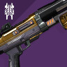 | Found Verdict | Found Verdict | 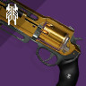 | Fatebringer | Found Verdict | 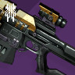 | Praedyth's Revenge | ||||||||
| 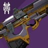 | Vision of Confluence | Praedyth's Revenge | Vision of Confluence | Fatebringer | 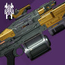 | Corrective Measure | ||||||||||
| Corrective Measure | Vision of Confluence | Corrective Measure | 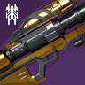 | Hezen Vengeance | Hezen Vengeance | |||||||||||
| Armor | Head | 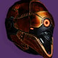 | 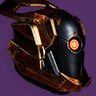 | 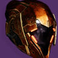 | ||||||||||||
| Arms | 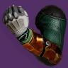 | 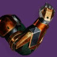 | 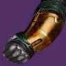 | |||||||||||||
| Chest | 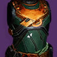 | 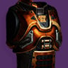 | 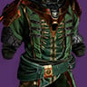 | |||||||||||||
| Legs | 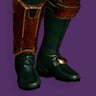 | 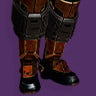 | 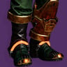 | |||||||||||||
| Class | 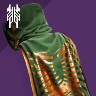 | 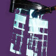 | 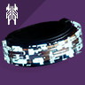 | |||||||||||||
-
Thanks to /u/thanosthumb, /u/duffking, /u/StormXTS, /u/SkylarDN9, /u/Karew, /u/cryophantom, /u/LeagueOfCaitlyn, /u/Kornillious, /u/Kakamile, /u/kawcoon, /u/Taux for corrections and info added to this guide.
-
Bonus thanks to Nevin Douglas's site Destiny Raider. Nevin created many of the maps in this post and shared them on RaidSecrets years ago.
-
Final thanks to "Cat Extraordinaire" /u/7echartist and the RaidSecrets Discord for helping edit & update strategies while they were happening live on Day 1. You're all wonderful!
-
Final final thanks to Bungie for bringing back the OG Destiny raid. [Story Time] Vault of Glass has a special place in my heart since it's the reason I discovered r/RaidSecrets and met so many great friends. I vividly remember being carried through each encounter as a kindergardian in late-2014. I barely understood Reddit at the time, but they suggested I check out a small subreddit called "RaidSecrets." All it took was one post on this subreddit sharing something odd I had discovered and I was hooked. Six years later, I'm the head mod and I'm still amazed by the quality, kindness, and sneaky brilliance of this community. I always tie my love for the game and this community back to Vault of Glass. So, thank you, Bungie! And thank all of you for the past six years! I really mean it.
Please send all Vex Mythoclasts to the RaidSecrets Moderator Help Fund.